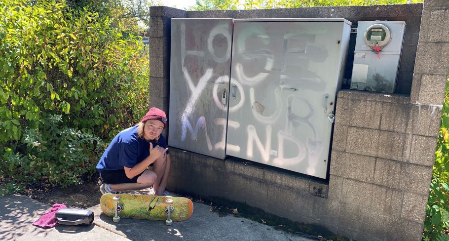

About me?

My professional history starts out, like most, early in highschool. I worked general contracting with my dad from ages 15 thru graduation. From there i went on to work the same line of work until i got my first welding job at 21, where I was quickly drawn to CNC machinery and eventually learned to operate a few different machines like an Amada 3610NT laser/punch press combo! this machine got me hooked on the concept of programming
my academic history consists of an endless supply of on the job training in a multitude of trades. i have certifications in C02 laser machine operation, heavy machinery certifications, and hundreds of hours in training seminars that cover everything from safety to qc and everything inbetween! As of lately im attending University of Oregon`s full stack software development boot camp until july of 2022.
I come from a pretty average suburban/college town, but i consider myself more from the skate park of that town. McMinnville, Oregon was my home till i was about 15 when i moved to Lincon City, Oregon. Where i also spent alot of time at the skatepark. I enjoy wheel sports, from drift cars to skating. If its got wheels chances are i have an interest in it.